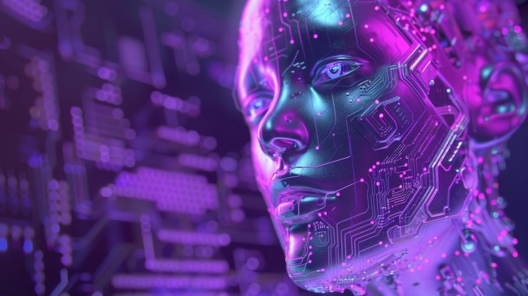
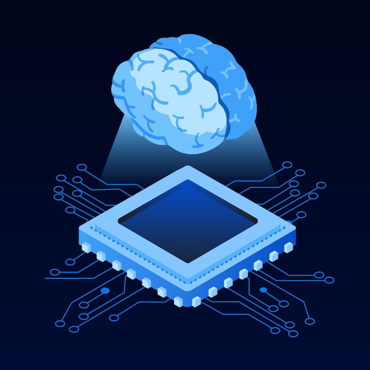
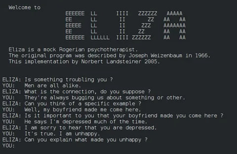
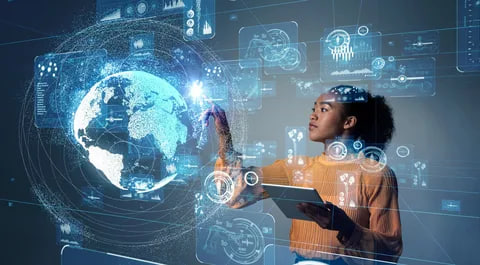
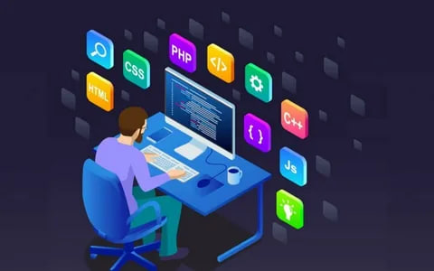
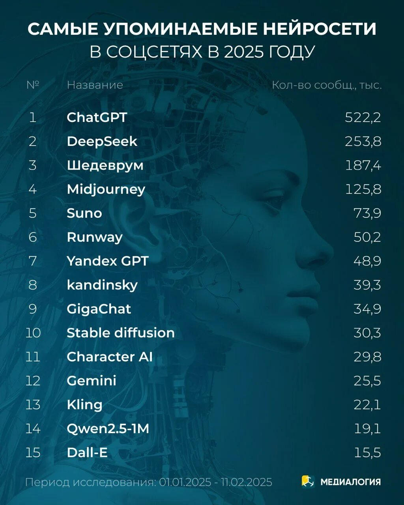
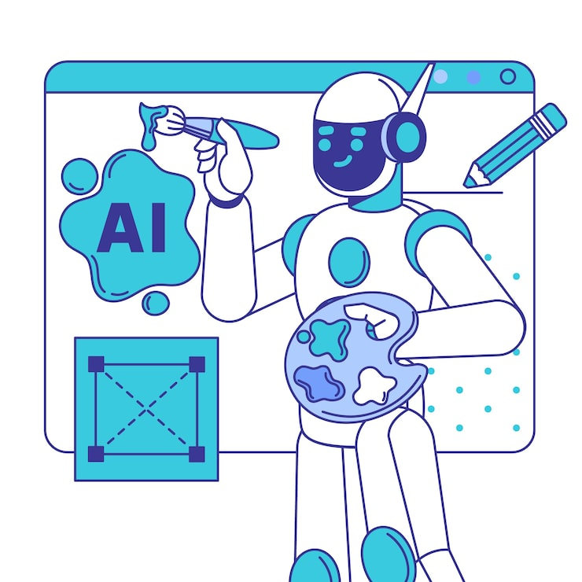
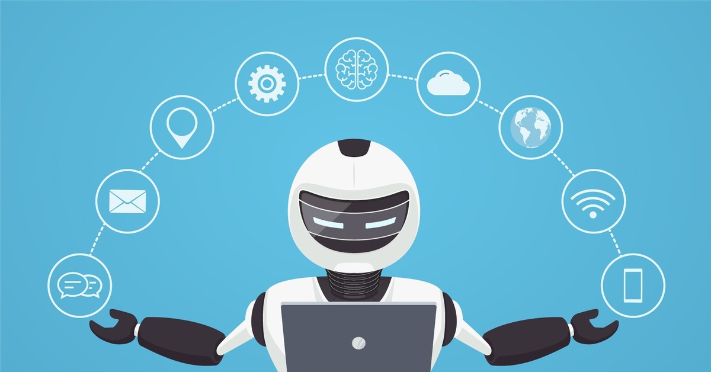

Искусственные интеллектуальные ассистенты (ИИ ассистенты) представляют собой программные системы, созданные для взаимодействия с человеком и выполнения различных задач. Они способны понимать естественный язык, анализировать информацию и предоставлять ответы или выполнять действия в зависимости от запроса пользователя. В отличие от обычных программ, которые работают строго по заданным алгоритмам, ИИ ассистенты используют технологии машинного обучения, что позволяет им адаптироваться и улучшать свои ответы со временем.
Основной задачей ИИ ассистента является упрощение взаимодействия человека с технологиями. Вместо сложных команд или поиска информации вручную, пользователь может просто задать вопрос или дать голосовую команду. Например, можно спросить о погоде, попросить найти информацию, установить напоминание или даже помочь в обучении. Это делает технологии более доступными и удобными для повседневного использования.
Современные ИИ ассистенты могут работать в разных форматах. Одни представлены в виде текстовых чат-ботов, другие — голосовых помощников, встроенных в смартфоны, компьютеры или умные устройства. Они могут быть интегрированы в сайты, приложения, мессенджеры и даже бытовую технику. Благодаря этому ИИ становится частью повседневной жизни человека.

Важной особенностью ИИ ассистентов является их способность обрабатывать большие объёмы данных. Они анализируют тексты, изображения, аудио и другие типы информации, чтобы лучше понимать контекст запроса. Это позволяет им не просто отвечать на вопросы, но и давать рекомендации, помогать принимать решения и выполнять сложные задачи.
Таким образом, ИИ ассистенты — это не просто программы, а полноценные цифровые помощники, которые делают взаимодействие с технологиями более естественным, быстрым и эффективным.
История искусственного интеллекта начинается задолго до появления современных технологий. Ещё в середине XX века учёные начали задумываться о том, возможно ли создать машину, способную мыслить так же, как человек. Одним из первых, кто серьёзно занялся этим вопросом, был Алан Тьюринг — британский математик, который предложил идею теста, позволяющего определить, может ли машина имитировать человеческое мышление.
В 1950-х годах начались первые эксперименты с компьютерными программами, которые могли выполнять простые логические задачи. Эти программы были очень примитивными по современным меркам, но именно они заложили фундамент для будущего развития искусственного интеллекта. Учёные создавали алгоритмы, которые могли играть в шахматы, решать уравнения и анализировать данные.

В 1960–1970-х годах появились первые системы, которые можно назвать прототипами современных ИИ ассистентов. Одним из самых известных проектов того времени стала программа ELIZA. Она могла вести диалог с пользователем, имитируя разговор с психотерапевтом. Несмотря на свою простоту, ELIZA произвела огромное впечатление на людей, так как впервые показала, что компьютер может “общаться”.
Однако возможности таких систем были сильно ограничены. Они не понимали смысл сказанного, а просто реагировали на ключевые слова и заранее заданные шаблоны.
В последующие десятилетия развитие ИИ шло неравномерно. Были периоды активного роста, сменяющиеся так называемыми “зимами искусственного интеллекта”, когда интерес к этой области снижался из-за недостатка вычислительных мощностей и слабых результатов. Тем не менее, исследования не прекращались, и технологии постепенно совершенствовались.

Настоящий прорыв произошёл в начале XXI века, когда начали активно развиваться технологии машинного обучения и нейронных сетей. Компьютеры стали гораздо мощнее, а объёмы данных — значительно больше. Это позволило создавать системы, которые могли обучаться на примерах и улучшать свою работу со временем.
Именно в этот период появились первые голосовые ассистенты, такие как Siri, Alexa и Google Assistant. Они уже могли распознавать речь, понимать команды пользователя и выполнять различные действия: от поиска информации до управления устройствами.
Современные ИИ ассистенты представляют собой сложные системы, основанные на глубоких нейронных сетях. Они обучаются на огромных массивах текстов, изображений и других данных. Благодаря этому они способны понимать контекст, поддерживать диалог и даже генерировать оригинальный контент.

Сегодня такие технологии используются практически во всех сферах жизни. В бизнесе они помогают автоматизировать процессы и улучшать обслуживание клиентов. В образовании — помогают студентам учиться и находить информацию. В повседневной жизни — упрощают выполнение задач и экономят время.
Например, современные ассистенты могут написать текст, помочь с программированием, перевести язык, создать изображение или даже выступить в роли личного помощника.
Будущее искусственного интеллекта выглядит ещё более впечатляющим. Учёные работают над созданием систем, которые смогут не только выполнять задачи, но и понимать эмоции, адаптироваться к человеку и взаимодействовать с ним на новом уровне. Это открывает огромные возможности, но также ставит перед обществом важные вопросы, связанные с безопасностью, этикой и влиянием технологий на жизнь людей.
Таким образом, путь от первых примитивных программ до современных ИИ ассистентов занял несколько десятилетий. За это время технологии прошли огромный путь развития и стали неотъемлемой частью современного мира. И, судя по темпам прогресса, это только начало.
На сегодняшний день существует множество ИИ ассистентов, каждый из которых имеет свои особенности и области применения. Одни ориентированы на повседневное использование, другие — на профессиональные задачи, такие как программирование, анализ данных или создание контента.

Одним из самых известных является : ChatGPT — текстовый ассистент, способный вести диалог, помогать с обучением, писать тексты и решать различные задачи. Он используется миллионами пользователей по всему миру и постоянно развивается.
Также широко известен : Gemini — интеллектуальная система от Google, которая интегрирована в поисковые сервисы и помогает пользователям находить информацию, анализировать данные и создавать контент.

Среди голосовых ассистентов стоит выделить : Google и Siri. Они встроены в устройства и позволяют управлять ими с помощью голоса, выполнять команды, искать информацию и взаимодействовать с умным домом.
Каждый из этих ассистентов имеет свои сильные стороны. Например, одни лучше справляются с текстами, другие — с голосовым управлением, третьи — с анализом данных. Однако все они объединены одной целью — сделать взаимодействие человека с технологиями более удобным и эффективным.
С развитием технологий количество ИИ ассистентов продолжает расти, а их возможности становятся всё шире. Это делает их важной частью современной цифровой экосистемы.
Работа ИИ ассистентов основана на сложных технологиях, включающих машинное обучение, нейронные сети и обработку естественного языка. Эти системы обучаются на огромных массивах данных, которые включают тексты, диалоги, изображения и другие виды информации. Благодаря этому они могут понимать запросы пользователя и генерировать ответы.
Одной из ключевых технологий является обработка естественного языка (NLP). Она позволяет ИИ понимать человеческую речь или текст, анализировать его структуру и смысл. Например, когда пользователь задаёт вопрос, система разбивает его на части, определяет ключевые слова и пытается понять контекст.
После этого включается модель машинного обучения, которая на основе своего обучения генерирует наиболее подходящий ответ. Современные ИИ используют глубокие нейронные сети, которые способны учитывать контекст, стиль общения и даже намерения пользователя.

Важно отметить, что ИИ не “думает” в привычном смысле. Он не обладает сознанием, а лишь анализирует данные и предсказывает наиболее вероятный ответ. Однако благодаря огромным объёмам информации и сложным алгоритмам его ответы могут выглядеть очень “человеческими”.
Некоторые ассистенты также используют дополнительные технологии, такие как распознавание речи, синтез голоса и компьютерное зрение. Это позволяет им работать не только с текстом, но и с аудио и изображениями.
Таким образом, ИИ ассистенты — это результат сочетания множества технологий, которые вместе создают систему, способную эффективно взаимодействовать с человеком и выполнять широкий спектр задач.